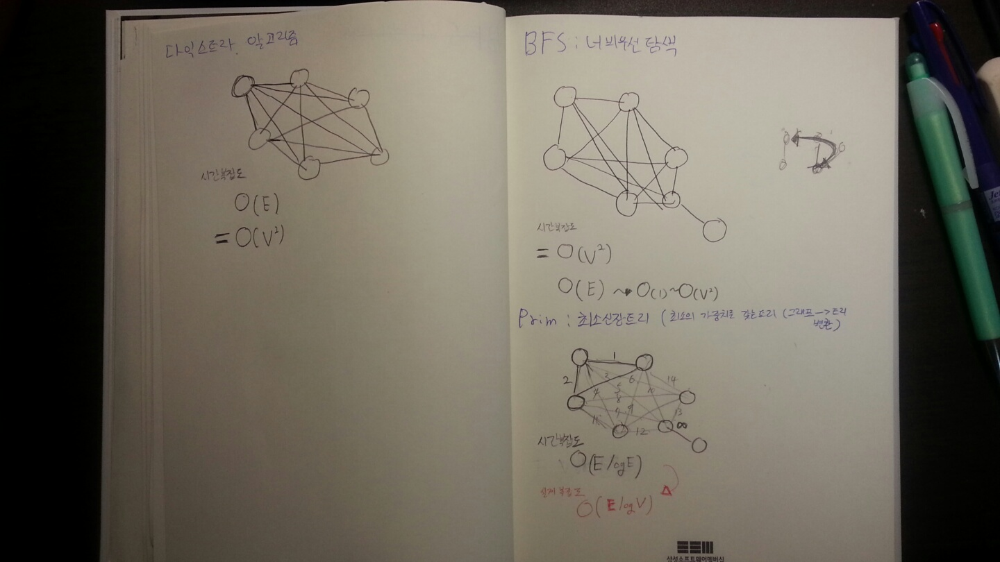

이진 트리의 종류 (위키피디아)
포화 이진 트리(perfect binary tree)와 달리 정 이진 트리(full binary tree) 는 모든 단말노드의 깊이가 같지는 않다. 어쨌든 포화 이진 트리(perfect binary tree)와 정 이진 트리(full binary tree)는 각 노드의 차수가 0또는 2인 점에서 비슷한 트리이다.
그래프 알고리즘의 시간복잡도는 간선이 얼마나 덜 밀집되어 있는가에 따라 다르다. 하지만 기본적으로 BFS를 활용하는 알고리즘 들이므로 최악의 경우 모든 간선을 방문하여야 한다. 따라서 O(E), 즉 O(V^2)이라고 예상할 수 있다.
BFS 알고리즘은 정점의 주변 간선부터 탐색하는 알고리즘이다. 알고리즘 구현시 큐를 사용하는 것이 특징이다. 시간복잡도를 계산해본 결과 O(v^2) 의 비용이 소모된다. (신뢰하지 말것, 틀린 부분 지적 부탁) 사실상 O(E)는 1 ~ O(V^2)으로 나타낼 수 있다. 위키피디아는 O(V+E)라는 시간복잡도로 표현하기도 하였음
Prim 알고리즘은 그래프로부터 트리를 생성하는 알고리즘의 한 종류로 최소의 비용으로 모든 정점을 잇는 트리를 만드는 알고리즘이다. 본 알고리즘은 BFS와 힙을 사용하여 최소의 노드를 찾는다. 따라서 시간복잡도는 O(E*logE) 또는 O((logE)^2) 이다. 해당비용은 최악의 경우 모든 간선이 큐에 들어가게되고 이 간선을 하나씩 뽑을때의 비용을 생각해서 계산된 결과이다. (신뢰하지 말것) 위키피디아의 경우 O(ElogV) 이다. Prim github 코드보기
프림 알고리즘
다익스트라 알고리즘은 그래프의 한 정점에서 다른 장점까지의 최소 비용을 계산해주는 알고리즘이다. 본 알고리즘은 BFS를 이용해 계산된다.
다익스트라 알고리즘
시간복잡도는 O(E), 즉 O(V^2) 이다. BFS로 모든 간선을 사용해서 최소비용을 찾아야한다. 다익스트라 github 코드보기
해시 함수 위키피디아 해시함수란 임의의 길이를 갖는 데이터를 일정한 길이를 갖는 값으로 만드는 함수이다. 이때 결과값을 해시, 해시값이라한다. 해시함수의 특성은 해시값이 다를때 함수의 입력값도 달라야 하는 것이다. (역은 성립안함) 해시테이블에서 사용되는 해시값은 hashCode()의 구현이 따라 달라진다.
정리해보면 해시값은 일정한 길이를 갖는 해시함수를 통해 계산된 값이라고 할 수 있다. 해시테이블은 이러한 해시값을 버킷의 길이로 나눈 나머지를 인덱스로 사용해 빠른 접근을 가능하게 한다.
결론
일부 문구를 인용한 사이트로는 NHN의 Helloworld 게시글인 Java HashMap은 어떻게 동작하는가? 이 있다.
Java HashMap은 Java 버전에 따라 개선되고 있는 Java Collection Framework이다. Map 인터페이스를 구현한 구현체이다. HashMap은 키에 대한 해시 값을 사용하여 값을 저장하고 조회하며, 키-값 쌍의 개수에 따라 동적으로 증가하는 associate array라고 할 수 있다. associate array 는 다른 말로 Map, Dictionary(파이썬), Symbol Table등이 있다고 한다.
Java HashMap 분석을 통한 해시테이블 을 알아보자:
public class HashMap<K,V> extends AbstractMap<K,V>
implements Map<K,V>, Cloneable, Serializable {
Map.java 인터페이스 함수:
int size();
Set<Map.Entry<K, V>> entrySet();
Collection<V> values();
Set<K> keySet();
void clear();
void putAll(Map<? extends K, ? extends V> m);
V remove(Object key);
V put(K key, V value);
V get(Object key);
boolean containsValue(Object value);
boolean containsKey(Object key);
boolean isEmpty();
인용 사이트에 의하면 Boolean이나 Integer, Long, Double과 같은 숫자객체는 값 자체를 해시값으로 사용할 수 있어서 해시 충돌이 적게 발생하지만 String이나 POJO에 대해서 충돌이 적은 완전한 해시함수를 제작하는 것은 사실상 불가능하다고 한다.
해시값 생성 예:
public static void main(String[] args){
String stringKey = "Hello World";
People objectKey1 = new People();
People objectKey2 = new People();
boolean keyBool1 = false;
boolean keyBool2 = true;
int keyInt1 = 1;
int keyInt2 = 2;
int keyInt3 = 3;
System.out.println(stringKey.hashCode());
System.out.println(objectKey1.hashCode()); System.out.println(objectKey2.hashCode());
System.out.println(((Boolean)keyBool1).hashCode()); System.out.println(((Boolean)keyBool2).hashCode());
System.out.println(((Integer)keyInt1).hashCode());
System.out.println(((Integer)keyInt2).hashCode());
System.out.println(((Integer)keyInt3).hashCode());
}
출력 결과:
-862545276
31168322
17225372
1237
1231
1
2
3
위를 보니 Integer 타입은 데이터 자체 가 hashCode()로 반환 되기 때문에 HashMap의 키값으로 사용된다. Boolean 타입은 위 출력과 같이 고정된 값 으로 변환된다.
실제 HashMap에서는 hash()함수를 호출하여 해시값을 생성하게된다. 내부적으로 hashcode()라는 메서드를 사용 한다. (>>> 연산자는 sign 부호에 상관없이 0으로 채운다):
static final int hash(Object key) {
int h;
return (key == null) ? 0 : (h = key.hashCode()) ^ (h >>> 16);
}
위 해시함수에서 상위 16비트와 xor 연산하는 단순한 형태의 보조 해시함수를 사용한다.
Java HashMap은 어떻게 동작하는가? 에 나온 이유를 인용 해보면 다음과 같다.:
- Java 8에서는 RBTree로 충돌을 해결하므로 성능 문제가 완화되었음
- 최근의 해시함수는 균등분포가 잘 되게 만들어지는 경향이 많아 Java 7의 보조 해시 함수의 효과가 낮음
Object 클래스의 hashCode():
public native int hashCode();
hashCode는 HashMap을 위해 객체를 구별 하기위해 사용되는 함수이다. 일반적으로 hashCode()는 오버라드하여 사용하지만 Object 클래스에 구현되어 있는 함수는 객체의 내부주소를 Integer값으로 바꾸는 식으로 동작한다고 한다.:
As much as is reasonably practical, the hashCode method defined by
* class {@code Object} does return distinct integers for distinct
* objects. (This is typically implemented by converting the internal
* address of the object into an integer, but this implementation
* technique is not required by the
* Java™ programming language.)
따라서 hashCode에 의존해서 해시값이 생성된다는 것이다.
hashCode()의 해시값을 이용해 실제 테이블의 인덱스를 구한다.:
final V putVal(int hash, K key, V value, boolean onlyIfAbsent,
boolean evict) {
Node<K,V>[] tab; Node<K,V> p; int n, i;
if ((tab = table) == null || (n = tab.length) == 0)
n = (tab = resize()).length;
if ((p = tab[i = (n - 1) & hash]) == null)
tab[i] = newNode(hash, key, value, null);
tab의 사이즈는 해시테이블의 크기로 2의 제곱수이다. tab[i = (n - 1) & hash] 부분에서 연산되는 i에 실제 데이터가 들어간다. 즉 hashCode()의 결과와 사이즈를 &연산 한 위치에 들어가는 것이다. 이는 int index = X.hashCode() % M; 와 유사하다. (이때 M은 크기)
키가 완전히 동일한 경우 (문자열 처럼 참조값이 다르고 내용이 같아도 가능) e라는 변수에 원래 존재하던 노드를 넣고:
if (p.hash == hash &&
((k = p.key) == key || (key != null && key.equals(k))))
e = p;
아래와 같이 값을 덮어씌운다:
if (e != null) { // existing mapping for key
V oldValue = e.value;
if (!onlyIfAbsent || oldValue == null)
e.value = value;
afterNodeAccess(e);
return oldValue;
}
기본적으로 HashMap은 threshold(스레시홀드) 값과 Capicity(해시 테이블 용량)를 갖는다. 디폴트 스레드홀드 값은 현재 용량의 75%정도이다. 통계적으로 해시 테이블 공간 사용률이 70% ~ 80% 에 이르면 성능 저하가 나타나기 시작한다. 따라서 일반적으로 75%정도 데이터가 차게되면 재해싱을 하게된다.
일반적으로 다음과 같이 해시맵을 생성한다고 가정해 보자.:
Map map = new HashMap();
HashMap 내부에선 다음과 같이 초기화가 일어난다.(정확하게 말하면 데이터를 삽입하면 아래와 같이 상태변이):
else { // zero initial threshold signifies using defaults
newCap = DEFAULT_INITIAL_CAPACITY;
newThr = (int)(DEFAULT_LOAD_FACTOR * DEFAULT_INITIAL_CAPACITY);
}
해시맵에 데이터를 여러번 삽입한다고 가정해보자.:
map.put(900618, "최창원");
map.put(890111, "박세호");
...
데이터가 threshold값 이상으로 증가하게 될 경우 resize()가 발생한다.:
++modCount;
if (++size > threshold)
resize();
afterNodeInsertion(evict);
return null;
그리고 다음과 같이 threshold와 Capicity를 2배로 증가시킨다.:
else if ((newCap = oldCap << 1) < MAXIMUM_CAPACITY &&
oldCap >= DEFAULT_INITIAL_CAPACITY)
newThr = oldThr << 1; // double threshold
결국은 new 키워드를 사용하여 새로운 해시테이블을 생성한 뒤 데이터를 이주시킨다.:
Node<K,V>[] newTab = (Node<K,V>[])new Node[newCap];
table = newTab;
if (oldTab != null) {
for (int j = 0; j < oldCap; ++j) {
따라서 N개의 데이터를 넣는다고 가정해보자. 데이터의 개수가 Threshold에 도달했을 때 capicity를 2배로 증가시킨다. 어쨌든 그때마다 loop를 수행해서 원본 배열에서 새로운 배열로 데이터를 이주하므로 비용을 계산해보면 다음과 같다. (삽입비용 + 데이터 이주 키-값 접근 비용)
N + 3/4*(16 + 32 + 64 + 128 + ... + N) = 2.5N
즉 초기에 버킷 개수를 결정하는 편이 성능상 이점이 있다.
해시 테이블의 충돌 해결법으론 Open Hashing(개방 해싱)과 Closed Hashing(패쇄 해싱)이 있다. Open Hashing은 새로운 공간을 할당해 충돌을 해결하는 방법이고 Closed Hashing은 주어진 해시테이블 공간 안에서 해결하는 방식이다.
Java HashMap에서 충돌을 극복하기 위해 Separate Channing을 사용한다. putVal() 함수 에서 이미 값이 들어있다면 해시버킷에 연결된 링크드 리스트 또는 Red-Black Tree를 사용하여 키에 대한 해시값을 삽입하는 방식이다. 충돌이 발생하더라도 RBTree를 사용한다면 빠른 탐색속도를 보장할 수 있다.
그 외에 Open Addressing 기법이 있다. 이 기법은 충돌이 발생했을때 다른 해시버킷에 저장하는 것이다. 기 방법의 단점은 데이터를 삭제할 때 처리가 효율적이기 어려운 것이다.
Open Hashing(개방 해싱의 한 종류)은 해시 테이블에서 키값 충돌시 새로운 공간을 할당해서 해결하는 방법이다. Seperate Chaining 방식은 충돌이 발생한 노드의 데이터를 연결리스트로 두는 개방 해싱방식이다. 삽입시 충돌이 발생하게되면 그 노드의 링크드 리스트의 포인터를 구해온다. 이후 링크드 리스트의 헤드에 데이터를 삽입한다.
삽입 과정
탐색 과정
Closed Hashing(폐쇄 해싱)은 해시 테이블 내부에서 충돌을 해결하는 방법이다. Open Addressing(폐쇄 해싱의 한 종류)은 해시 테이블내의 다른 공간을 사용하여 충돌을 해결하는 방법이다. Open Addressing 방식은 충돌이 발생할 경우 선형 탐사, 제곱 탐사, 더블 해싱을 이용해 저장할 위치를 찾는다.
선형 탐사 는 충돌이 발생할 경우 일정한 값을 더해서 저장할 공간을 찾는 방식이다. 선형탐사의 단점 은 충돌이 계속 발생할 경우 데이터가 한곳에 집중되는 현상이 발생하는 것이다. 즉 클러스터 현상이 심하게 발생한다.
제곱 탐사 는 값의 제곱값을 더해서 저장할 위치를 찾는 방식이다. 이동 폭이 제곱수로 늘어나게 된다. 제곱 탐사 의 단점은 다른 해시값을 갖는 경우에는 클러스터 현상이 적게 발생하긴 하지만 같은 해시값을 갖는 데이터에서는 여전히 클러스터가 심하게 발생한다.
클러스터 문제는 공간을 찾기위한 이동 폭을 계산하는 과정이 규칙적이기 때문이다.
이중 해싱 은 충돌이 발생했을때 다시한번 해싱을 하여 저장할 위치를 찾아가는 방식이다. 해시함수를 2개를 구현한다. 첫번째 해시함수는 테이블의 인덱스를 계산하기위해 사용한다. 만약 테이블에서 충돌이 발생한다면 2번째 해시함수를 이용해 구한 값을 더해 저장할 위치를 찾는다.
B-Tree 는 데이터베이스 와 파일 시스템에서 쓰이는 트리의 일종으로 하나의 노드가 가질 수 있는 자식 노드의 개수가 2보다 크고 키-값 쌍을 저장하는 균형잡힌 트리이다. 또한 B-Tree는 엔트리를 정렬된 상태로 저장하며 검색, 삽입, 삭제를 로그시간내에 처리할 수 있는 트리이다.
특징
장점
B+ Tree 는 B-Tree의 변형구조로 키를 인덱스로 사용하고 키에 의해 식별되는 레코드를 가장 하위레벨의 리프노드에 두고 리프노드를 정렬시킨 트리이다.
특징
{kind=link}